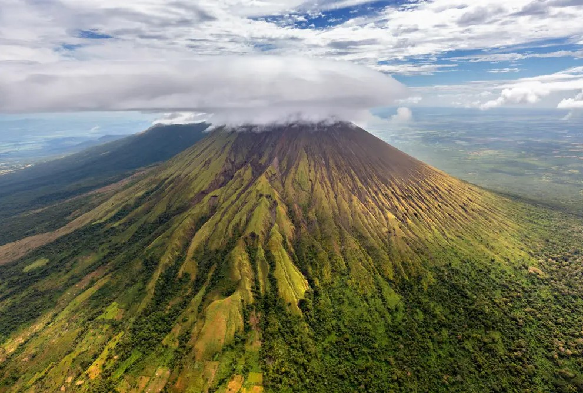

From Volcano to Glass: The Story Behind Nicaragua’s Award-Winning Flor de Caña Rum
In 1875, at the age of 25, Alfredo Francisco Pellas Canessa left Genoa, Italy, to travel to Nicaragua, leaving behind the comforts of the Old World for the opportunities in the New World—and in an untested new economy. Much like the entrepreneurs of today, he took risks on fresh ideas. During the height of the California Gold Rush, he invested in a shorter and safer steamboat route through Nicaragua that would facilitate transporting goods and passengers from the East Coast to the West Coast of the U.S., cutting the trip down to a mere 36 days instead of 6 months.
The route was a massive success, but when headlines broke that construction would begin on the Panama Canal, he was quick to adapt and realize the need for a new vision, especially with the coast-to-coast railroad in the U.S. also nearing completion. It was then that he took an unlikely change in direction and turned his focus to rum production. In 1890, he was captivated by the landscape at the base of San Cristóbal, a cloud-grazing active volcano in the northwest region of Nicaragua.
It was an unexpected place to build a distillery—five miles from the tallest volcano in Nicaragua with a crater more than 55 times the size of a football field—but he saw something there that others didn’t: the fertile soil, water, and climate. Now five generations later, Flor de Caña rum is one of the most highly awarded in the world. Achieving this level of mastery has come with plenty of challenges and the family-run brand has survived revolutions, financial turbulence, and even a plane crash.
Sound decision making has allowed the company to thrive in times when others would have failed. Over the years, they’ve trailblazed social responsibility and environmental sustainability in an industry that for the most part is just starting to catch up. They were early adopters of Fair Trade practices and have been running on renewable energy for more than a decade. Since 1913, a company school has provided free education to hundreds of students, and a hospital since 1958 has offered free care to workers and their families.
While the adventurous life that Alfredo Francisco led makes for one heck of a drinking story, the product in the glass speaks for itself. Similar to wines that are often judged by their terroir, Flor de Caña rums have benefitted from the volcanic landscape. The soil is constantly fertilized by volcanic ashes, the water is enriched by volcanic minerals, and the aging process is improved by the volcanic climate. Inside the distillery, high temperatures accelerate the evaporation rate resulting in a more intense interaction between the barrel and the rum, leading to an exceptionally smooth liquid.